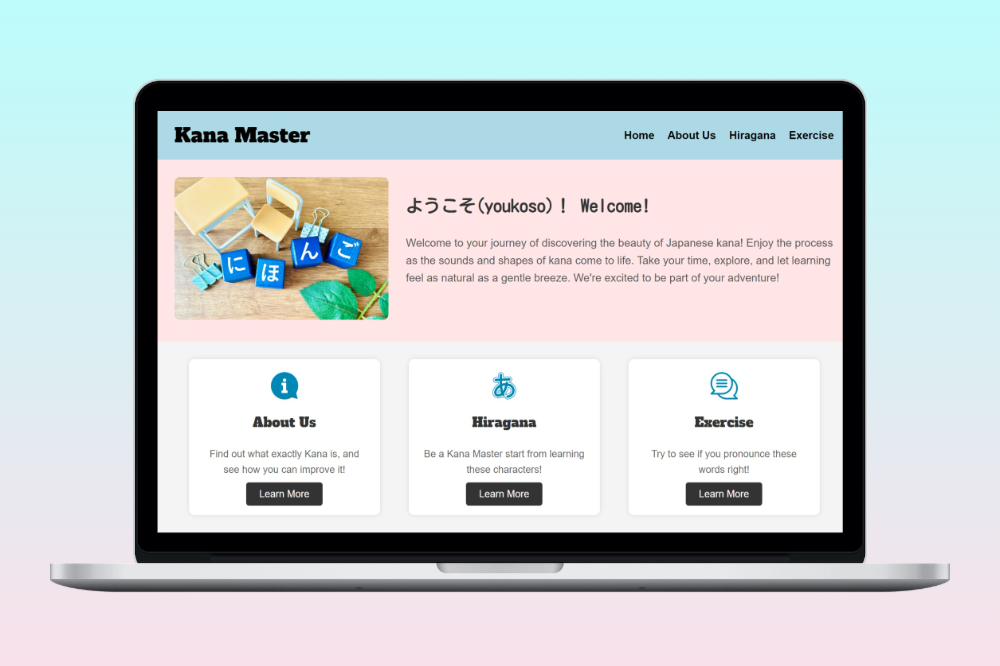
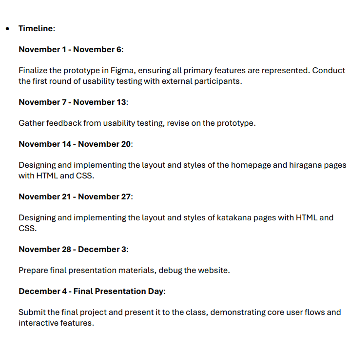
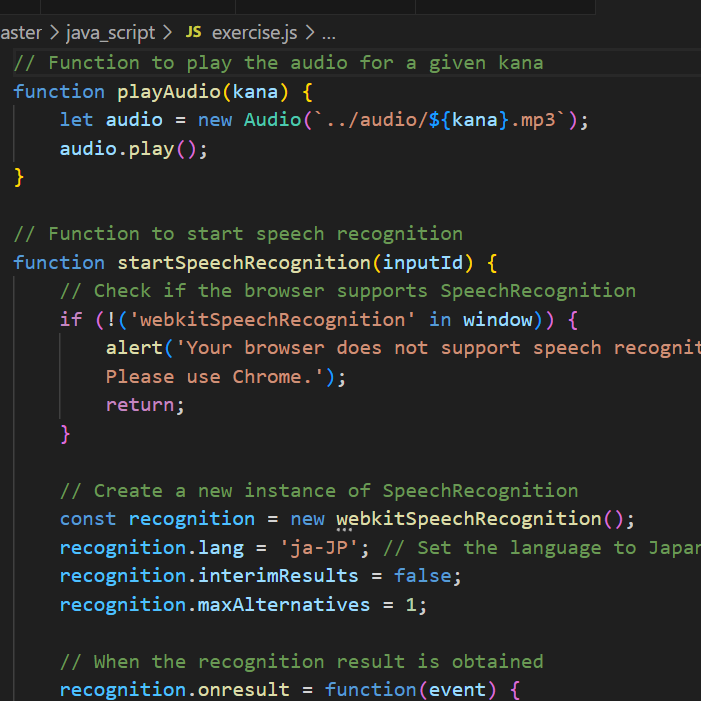
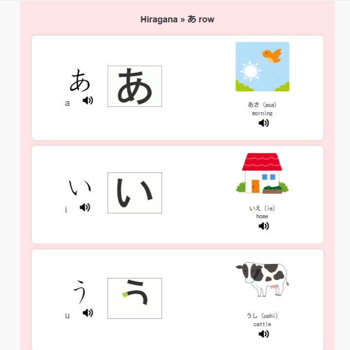
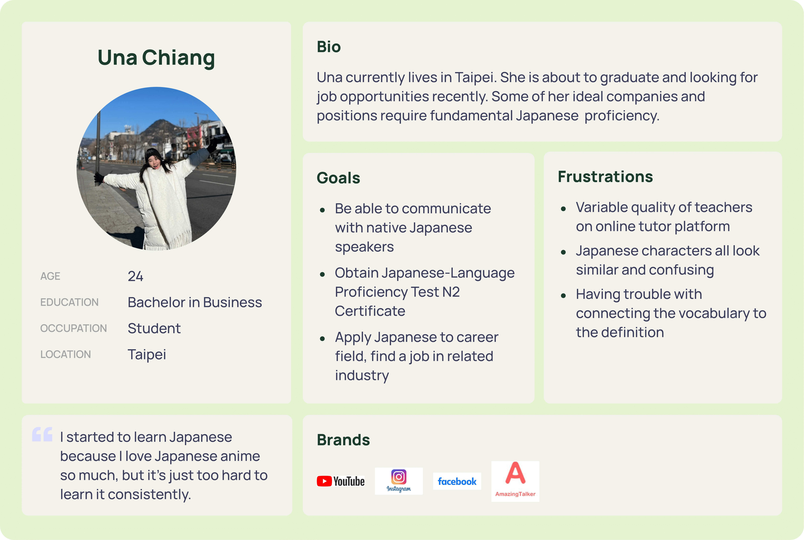
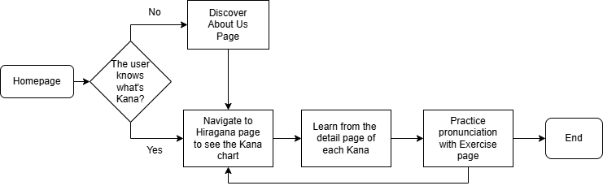
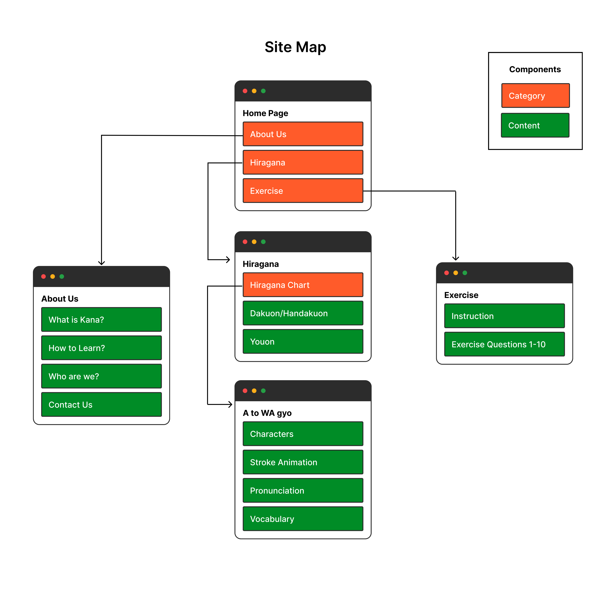
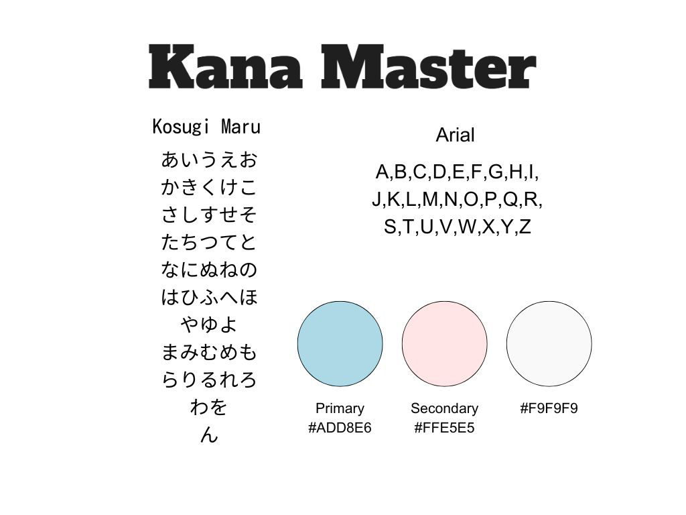
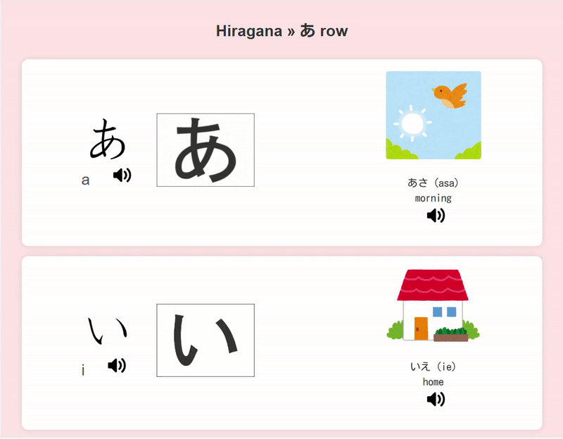
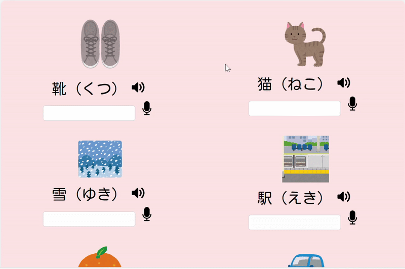

2024
Responsive Web
HTML, CSS, Javascript
Product Designer, Developer (Front-end)
Kana Master is an interactive web-based learning tool designed to help users master one of the Japanese character (Hiragana) through understandable introduction of each Hiragana, practice exercises, and AI-powered pronunciation analysis. This project was an academic assignment completed within a strict 6-week timeline, requiring efficient design and development strategies.
Focused on core features (learning, practice, quizzes) and used an iterative approach to refine designs quickly. To ensure efficiency, I also set weekly milestones and strictly followed a progress schedule, allowing me to stay on track and make timely adjustments.


Used basic audio input analysis and explored third-party APIs, Web Speech API, for potential future integration.
Introduced gamification elements like quizzes, progress tracking, and interactive exercises to keep users engaged.

As a Japanese teacher, I observed that 80% of my students struggled with pitch accent recognition, even those with a strong grammar and knowledge foundation.
80% of my students struggled with pitch accent recognition, even those with a strong grammar foundation. Their unclear pronunciation often hinders them from fluently communicating with native speakers.
Existing resources lack interactive pronunciation feedback, leading to ineffective learning and limited speaking confidence.
Identify user pain points.
Many learners struggle with Japanese pronunciation due to a lack of dedicated platforms that provide real-time feedback and guided practice. Without structured pronunciation training, students often develop incorrect speech patterns that are difficult to correct later.
Outside the classroom, students find it challenging to stay engaged with their language studies. The absence of interactive or gamified learning experiences reduces their motivation to practice consistently, leading to slower progress in mastering kana pronunciation.
While practicing exercises, students lack a reliable reference to verify if their pronunciation is correct. Without immediate feedback or a way to compare their speech to native examples, learners struggle to identify mistakes and improve efficiently.




To encourage active learning, I designed interactive UI components that support user engagement.
Clickable Kana Tiles → Users can tap kana characters to hear pronunciation, reinforcing auditory learning.

Instant feedback is essential for learning. I designed clear visual & auditory cues to guide users in real-time.
AI Generated Answer Feedback → The user's pronunciation will be recognized and displayed in the text box, while native examples are available for comparison and improvement.
